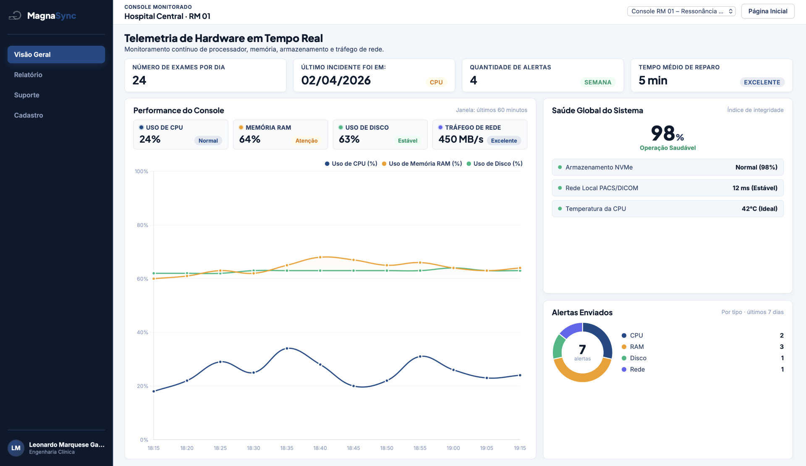

Sem a MagnaSync
- Falhas detectadas só após a parada do Servidor PACS
- Sem visibilidade contínua de CPU, RAM, disco e rede
- Registros manuais e análises técnicas descentralizadas
- Risco de lentidão e atrasos no envio ao PACS
Acompanhe CPU, memória RAM, disco e tráfego de rede dos Servidores PACS. Identifique gargalos e saturação de recursos antes que a recepção e o armazenamento de exames do tipo DICOM sejam afetados.

Insira sua imagem aqui
Nome do arquivo:hero-image.png ou edite o src
A diferença prática entre uma rotina reativa e a previsibilidade contínua na infraestrutura dos Servidores PACS.
O MagnaSync acompanha os principais componentes dos Servidores PACS para identificar alterações antes que elas se tornem problemas.
Detecta sobrecarga de processamento no Servidor PACS durante a recepção e a indexação de exames DICOM.
Identifica pressão de memória nos Servidores PACS durante o roteamento simultâneo de estudos.
Alerta precoce de saturação dos volumes de armazenamento de exames nos Servidores PACS.
Acompanha a taxa de transferência e perdas de pacotes nos picos de recepção de exames DICOM.
Monitore as métricas de hardware dos Servidores PACS para evitar travamentos ou gargalos na recepção, indexação e armazenamento de exames.
Atuação preventiva sobre irregularidades de CPU, RAM, disco e rede nos Servidores PACS, com logs de chamados e rastreabilidade técnica.
Tomada de decisão com base em relatórios de disponibilidade, capacidade de disco e incidentes dos Servidores PACS.
Respostas objetivas sobre funcionamento, escopo e compatibilidade.
?Descubra como o MagnaSync ajuda a evitar paradas não planejadas, saturação de armazenamento por arquivos de imagem do tipo DICOM e gargalos de rede nos Servidores PACS.